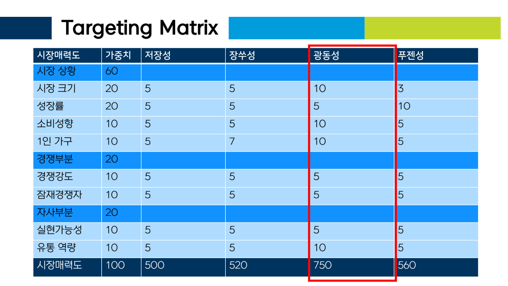
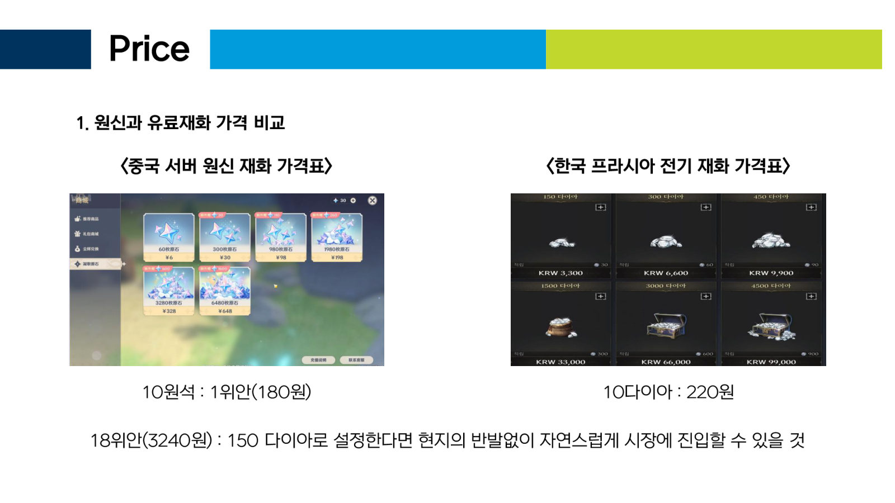

▸ 12 · Coursework · 개인 과제 · 2023
프라시아 전기 중국 진출 전략
War of Prasia — China Market Entry Strategy
▸ 12 · Coursework · 개인 과제 · 2023
War of Prasia — China Market Entry Strategy
01과제
2023년 '중국마케팅' 수업에서 낸 개인 과제 가운데 세 편입니다. 한 게임을 정해 끝까지 다뤘습니다. 대상은 넥슨의 크로스 플랫폼 MMORPG 「프라시아 전기」입니다. 중간과제에서 환경을 분석하고, 포지셔닝 과제를 거쳐, 기말 발표에서 중국 진출 전략을 냈습니다.
02환경 분석
중간과제는 5C와 TOWS로 짰습니다.
TOWS에서는 강점(IP, 개발·운영 경험, 선점 효과, 서브 브랜드)과 약점(P2W 이미지, 모바일 개발 역량, 중국 의존도, 유저 충성도)을 기회·위협과 엮었습니다. 기말 발표에서는 기회(플레이 기기 확대, IP로 사업 다각화, 경제력 있는 게이머 증가)로 약점을 보완하는 OW 전략을 골랐습니다.
03포지셔닝
경쟁사를 국내 MMORPG 제작사로 바꿔 포지셔닝 맵을 그렸습니다. 가로축은 플랫폼 접근성, 세로축은 유저 간 경쟁 강도입니다.
프라시아 전기는 경쟁 강도가 높은 쪽에 있습니다. 다만 성을 21개 둬서 소수가 아닌 많은 유저가 공성전에 참여할 수 있게 했습니다. PC와 모바일을 오가며 할 수도 있습니다. 이 두 점으로 USP를 정했습니다.
04타깃
저장성·장쑤성·광동성·푸젠성을 1인당 소득, 인구, 직업으로 나눴습니다. 시장 상황 60, 경쟁 20, 자사 역량 20의 가중치로 시장 매력도를 매겼고 광동성을 골랐습니다.
750
광동성
560
푸젠성
520
장쑤성
500
저장성
페르소나는 광동성에 사는 33세 프로그래머입니다. 어릴 때 한국 게임을 해 봤고 RPG를 좋아합니다. 하던 게임에 흥미를 잃어 새 게임을 찾고 있습니다.
054P 전략
기말 발표(20분)에서는 이 타깃에 맞춰 4P를 냈습니다.
많은 유저가 참여하는 공성전과 PC·모바일을 오가는 플레이로 USP를 정했습니다.
Gallery


Documents · 3